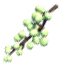
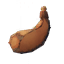
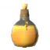
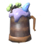
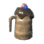

Nahrung & Tränke
Nahrung & Tränke in Valheim – 111 Gegenstände mit Biom, Fundort, benötigtem Werkzeug, Rezept und Verwendung.
Kein Gegenstand gefunden.
 Augencreme
Augencreme
Knackig, kühl und cremig.
Herkunft
- Herstellen: Kessel (Stufe 3) aus 3 ×
 Grauzwergen-Auge, 1 ×
Grauzwergen-Auge, 1 ×  Gefrorene Drüse
Gefrorene Drüse
 Beerenmarmelade
Beerenmarmelade
Köstliche klassische Mischung aus Himbeeren und Blaubeeren.
Herkunft
- Herstellen: 4 × Kessel aus 8 ×
 Himbeeren, 6 ×
Himbeeren, 6 ×  Blaubeeren
Blaubeeren
Verwendung
- Zutat für: Düsterwald-Buffetplatte
Blaubeeren
Leckere Blaubeeren.
Herkunft
- Aufsammeln: Liegt am Boden bzw. wächst wild · Düsterwald
- Aufsammeln: Bärenhöhle
- Zerschlagen: Ruine · 2–4 × · 28 % Chance
Verwendung
- Zutat für: Beerenmarmelade, Blaues Feuerwerk, Hirscheintopf, Lendenschutz des Bären, Metmischung: Gesund, Metmischung: Lecker, Metmischung: Ratatosk, Muster des Bären, Pfannkuchen, Schmutz-Shake, Zerrupftes Bärenfleisch
- Baumaterial für: Blau, Blaues Banner, Lilafarbenes Banner, Weiß-blau gestreiftes Banner
- Futter zum Zähmen von: Wildschwein
 Blutpudding
Blutpudding
Schmeckt blutig gut.
Herkunft
- Herstellen: Kessel (Stufe 4) aus 2 ×
 Distel, 2 ×
Distel, 2 ×  Blutsack, 4 ×
Blutsack, 4 ×  Gerstenmehl
Gerstenmehl
 Brechbeeren
Brechbeeren
Erlaubt es dem Einnehmenden, sich schnell von einer verspeisten Mahlzeit zu trennen.
Herkunft
- Beute von: Grauzwergen Schamane · Düsterwald, Hoher Norden · 1–2 ×
- Beute von: Fuling Schamane · Ebenen · 1–2 ×
 Brodelnde Beerenbrühe
Brodelnde Beerenbrühe
Diese Suppe breitet sich mit einem fast kribbelnden Gefühl im Bauch aus.
Herkunft
- Herstellen: Kessel (Stufe 5) aus 3 ×
 Harz, 2 ×
Harz, 2 ×  Straußenfarn, 2 ×
Straußenfarn, 2 × 
Weinbeerentraube
 Brot
Brot
Ein köstlicher Laib Brot.
Herkunft
- Garen: Steinofen aus
 Brotteig
Brotteig - Truhen: Das Loch · 1–2 × · 45 % Chance, Dorf des Nordens · 1–2 × · 45 % Chance
Verwendung
- Zutat für: Ebenen-Kuchenpicknick
 Feuriger Svin-Eintopf
Feuriger Svin-Eintopf
Dieser leicht modrige Eintopf gehört auf den Speiseplan jedes Abenteurers.
Herkunft
- Herstellen: Kessel (Stufe 5) aus 1 ×
 Asksvin-Schweif, 2 × Weinbeerentraube, 1 ×
Asksvin-Schweif, 2 × Weinbeerentraube, 1 ×  Rauchwölkchen
Rauchwölkchen
 Fisch und Brot
Fisch und Brot
Geschenke von Land und Wasser.
Herkunft
- Garen: Steinofen aus
 Fisch und Brot, ungekocht
Fisch und Brot, ungekocht
 Fischhappen
Fischhappen
Brot und Fisch in einem. Was will man mehr?
Herkunft
- Herstellen: Kessel (Stufe 4) aus 2 ×
 Gekochter Fisch, 4 × Gerstenmehl
Gekochter Fisch, 4 × Gerstenmehl
 Fischsuppe
Fischsuppe
Schwimmt geradezu im Geschmack!
Herkunft
- Herstellen: Kessel (Stufe 7) aus 3 ×
 Roher Fisch, 2 ×
Roher Fisch, 2 ×  Grünkohl, 2 ×
Grünkohl, 2 ×  Eis
Eis
 Fleisch im Brot
Fleisch im Brot
Eine praktische Mahlzeit, die von reisenden Händlern bevorzugt wird.
Herkunft
- Herstellen: 2 × Kessel (Stufe 7) aus 1 ×
 Elchfleisch, 2 × Grünkohl, 1 ×
Elchfleisch, 2 × Grünkohl, 1 ×  Hafermehl, 2 ×
Hafermehl, 2 ×  Preiselbeeren
Preiselbeeren
 Fleischbällchen und Poteitr
Fleischbällchen und Poteitr
Es gibt kaum etwas Kultigeres!
Herkunft
- Herstellen: Kessel (Stufe 7) aus 1 × Elchfleisch, 2 × Preiselbeeren, 2 ×
 Poteitr
Poteitr
 Fleischplatte
Fleischplatte
Kampfnahrung.
Herkunft
- Garen: Steinofen aus
 Ungekochte Fleischplatte
Ungekochte Fleischplatte
 Gebackene Poteitr
Gebackene Poteitr
Weder gekocht, noch gestampft, noch als Eintopf. Trotzdem lecker!
Herkunft
- Garen: Steinofen aus
 Ungebackene Poteitr
Ungebackene Poteitr
 Gebräu des Tiergeflüsters
Gebräu des Tiergeflüsters
Riecht wie ein Schweinestall. Der Geschmack wird wohl nicht viel besser sein.
Herkunft
- Gären: Fermentierer aus
 Metmischung: Tiergeflüster
Metmischung: Tiergeflüster
 Gefüllter Pilz
Gefüllter Pilz
Eine magische Geschmacksexplosion.
Herkunft
- Garen: Steinofen aus
 Ungekochter gefüllter Pilz
Ungekochter gefüllter Pilz
 Gegrillter Nixenschwanz
Gegrillter Nixenschwanz
Dieses pikante, über Holzkohle gegrillte Stück Fleisch besitzt ein leichtes Aroma von Seetang und Gras.
Herkunft
- Garen: Eiserne Kochstation aus
 Nixenschwanz
Nixenschwanz - Garen: Kochstelle aus Nixenschwanz
 Gekochter Asksvin-Schweif
Gekochter Asksvin-Schweif
Das Fleisch hat ein kräftiges und gereiftes Aroma, aber wenn man es richtig grillt, ist es sehr wohlschmeckend.
Herkunft
- Garen: Eiserne Kochstation aus Asksvin-Schweif
Verwendung
- Zutat für: Aschenlande-Feinschmeckertopf
Gekochter Fisch
Leckerer, geräucherter Fisch
Herkunft
- Garen: Eiserne Kochstation aus Roher Fisch
- Garen: Kochstelle aus Roher Fisch
Verwendung
- Zutat für: Fischhappen, Matrosenfreude
 Gekochter Robbenblubber
Gekochter Robbenblubber
Zähes Fleisch mit einem Nachgeschmack von Reue.
Herkunft
- Garen: Steinofen aus
 Robbenblubber
Robbenblubber
 Gekochtes Bärenfleisch
Gekochtes Bärenfleisch
Schmeckt nach Sieg.
Herkunft
- Garen: Eiserne Kochstation aus
 Bärenfleisch
Bärenfleisch - Garen: Kochstelle aus Bärenfleisch
Verwendung
- Zutat für: Zerrupftes Bärenfleisch
 Gekochtes Ei
Gekochtes Ei
Spiegelei!
Herkunft
- Herstellen: Kessel aus 1 ×
 Ei
Ei
 Gekochtes Elchfleisch
Gekochtes Elchfleisch
Mageres Fleisch, das voller Geschmack steckt.
Herkunft
- Garen: Eiserne Kochstation aus Elchfleisch
Verwendung
- Zutat für: Nördliche Morgenkost
 Gekochtes Hasenfleisch
Gekochtes Hasenfleisch
Zäh, aber schmackhaft.
Herkunft
- Garen: Eiserne Kochstation aus
 Hasenfleisch
Hasenfleisch - Garen: Kochstelle aus Hasenfleisch
 Gekochtes Hirschfleisch
Gekochtes Hirschfleisch
Das viele Herumrennen hat sich ausgezahlt.
Herkunft
- Garen: Eiserne Kochstation aus
 Hirschfleisch
Hirschfleisch - Garen: Kochstelle aus Hirschfleisch
Verwendung
- Zutat für: Ganzes gebratenes Wiesenwildschwein, Hirscheintopf
 Gekochtes Hühnerfleisch
Gekochtes Hühnerfleisch
Schmeckt wie Hühnchen.
Herkunft
- Garen: Eiserne Kochstation aus
 Hühnerfleisch
Hühnerfleisch - Garen: Kochstelle aus Hühnerfleisch
 Gekochtes Knochenschlund-Fleisch
Gekochtes Knochenschlund-Fleisch
Die tosende See hat den Geschmack dieses Fleischs nicht verbessert, aber beim Grillen über dem Feuer ist es angenehm knusprig geworden.
Herkunft
- Garen: Eiserne Kochstation aus
 Knochenschlund-Fleisch
Knochenschlund-Fleisch
 Gekochtes Lox-Fleisch.
Gekochtes Lox-Fleisch.
Ein großer Brocken zarten Fleisches. Eine Mahlzeit, die Walhallas würdig ist.
Herkunft
- Garen: Eiserne Kochstation aus
 Lox-Fleisch
Lox-Fleisch
 Gekochtes Schlangenfleisch
Gekochtes Schlangenfleisch
Ein gekochtes Stück Seeschlange. Riecht gut.
Herkunft
- Garen: Eiserne Kochstation aus
 Schlangenfleisch
Schlangenfleisch
Verwendung
- Zutat für: Matrosenfreude, Schlangeneintopf
 Gekochtes Sucherfleisch
Gekochtes Sucherfleisch
Saftiges weißes Fleisch, eine Delikatesse.
Herkunft
- Garen: Eiserne Kochstation aus
 Sucherfleisch
Sucherfleisch
Verwendung
- Zutat für: Pilzallerlei à la Nebellande
 Gekochtes Vulkangeier-Fleisch
Gekochtes Vulkangeier-Fleisch
Zähes und ziemlich trockenes Fleisch. Mit ein paar Gewürzen würde es sicher besser schmecken, aber satt macht es auf alle Fälle.
Herkunft
- Garen: Eiserne Kochstation aus
 Vulkangeier-Fleisch
Vulkangeier-Fleisch
 Gekochtes Wildschweinfleisch
Gekochtes Wildschweinfleisch
Besitzt einen irdenen Geschmack.
Herkunft
- Garen: Eiserne Kochstation aus
 Wildschweinfleisch
Wildschweinfleisch - Garen: Kochstelle aus Wildschweinfleisch
Verwendung
- Zutat für: Ganzes gebratenes Wiesenwildschwein
 Gekochtes Wolfsfleisch
Gekochtes Wolfsfleisch
Besitzt einen wilden Geschmack.
Herkunft
- Garen: Eiserne Kochstation aus
 Wolfsfleisch
Wolfsfleisch - Garen: Kochstelle aus Wolfsfleisch
 Gelber Pilz
Gelber Pilz
Ein energiegeladener glühender Pilz
Herkunft
- Aufsammeln: Trollhöhle, Bärenhöhle, Grabkammer (Schwarzwald), Hildir-Quest: Schwelendes Grab, Versunkene Krypta
Verwendung
 Geräuchertes Elchfleisch
Geräuchertes Elchfleisch
Das Raucharoma unterstreicht den Wildgeschmack.
Herkunft
- Herstellen: Kessel (Stufe 7) aus 1 × Elchfleisch, 2 × Grünkohl
 Geringer Ausdauer-Met
Geringer Ausdauer-Met
Stellt Ausdauer wieder her.
Herkunft
- Zerschlagen: Uralter Topf · Aschenlande · 9,1 % Chance
- Gären: Fermentierer aus
 Metmischung: Geringe Ausdauer
Metmischung: Geringe Ausdauer - Truhen: Verseuchte Mine · 1–2 × · 50 % Chance
- Zerschlagen: Verkohlte Ruine · 9,1 % Chance, Fauliges Loch (Morgen) · 9,1 % Chance, Verkohlte Turmruine · 9,1 % Chance
 Geröstete Krustenpastete
Geröstete Krustenpastete
Diese Nachspeise hält dich den ganzen Tag am Laufen.
Herkunft
- Garen: Steinofen aus
 Ungekochte Krustenpastete
Ungekochte Krustenpastete
 Gerstenwein
Gerstenwein
Schützt vor Feuer.
Herkunft
- Gären: Fermentierer aus
 Gerstenwein Mischung: Feuerwiderstand
Gerstenwein Mischung: Feuerwiderstand
Gesunder Met
Stellt Gesundheit wieder her.
Herkunft
- Zerschlagen: Uralter Topf · Aschenlande · 9,1 % Chance
- Gären: Fermentierer aus
 Metmischung: Gesund
Metmischung: Gesund - Truhen: Verseuchte Mine · 1–2 × · 50 % Chance
- Zerschlagen: Verkohlte Ruine · 9,1 % Chance, Fauliges Loch (Morgen) · 9,1 % Chance, Verkohlte Turmruine · 9,1 % Chance
 Giftpilz
Giftpilz
Manche sagen, man könne alles essen, was man im Wald findet. Bei diesem Pilz trifft das nicht zu.
Herkunft
- Kaufen: Die Sumpfhexe · 85 Münzen · nach dem Sieg über: Moder
Verwendung
- Zutat für: Metmischung: Berserkir
 Glasiertes Süßbrot
Glasiertes Süßbrot
Ein süßer Leckerbissen, mit dem sich Erfolge feiern lassen!
Herkunft
- Garen: Steinofen aus
 Ungebackenes Süßbrot
Ungebackenes Süßbrot
Grünkohl
Ein vielseitiges grünes Gemüse.
Herkunft
- Anbauen: Grünkohl · Pflanzen: 1 ×
 Grünkohlsamen · Grasland, Düsterwald, Ebenen, Aschenlande · 3 ×
Grünkohlsamen · Grasland, Düsterwald, Ebenen, Aschenlande · 3 ×
Verwendung
 Grünkohlchips
Grünkohlchips
Knuspriges Gemüse!
Herkunft
- Garen: Steinofen aus
 Rohe Grünkohlchips
Rohe Grünkohlchips
 Hackfleischsoße
Hackfleischsoße
Köstliche Brocken in einer dicken Soße.
Herkunft
- Herstellen: Kessel aus 1 × Wildschweinfleisch, 1 × Nixenschwanz, 1 ×
 Karotte
Karotte
 Hafer
Hafer
Schmackhafte Körner, die im Ganzen verwendet oder zu Mehl gemahlen können.
Herkunft
- Verarbeiten: Windmühle aus
 Hafersamen
Hafersamen
Verwendung
- Zutat für: Haferflocken, Hafermilch
- Wird verarbeitet zu: Hafermehl (Windmühle)
 Haferflocken
Haferflocken
Wird mit einer großen Portion Preiselbeermarmelade serviert.
Herkunft
- Herstellen: Kessel (Stufe 6) aus 2 × Hafer, 2 × Preiselbeeren, 1 ×
 Hafermilch
Hafermilch
Hafermilch
Schmeckt nach Innovation.
Herkunft
Verwendung
- Zutat für: Haferflocken, Pfannkuchen
Himbeeren
Süß und lecker.
Herkunft
- Aufsammeln: Liegt am Boden bzw. wächst wild · Grasland
- Aufsammeln: Startpunkt (Opfersteine), Verlassener Hof
Verwendung
- Zutat für: Beerenmarmelade, Metmischung: Geringe Ausdauer, Metmischung: Gesund, Metmischung: Lecker, Metmischung: Sehr gesund, Rotes Feuerwerk, Schmutz-Shake
- Baumaterial für: Blau, Kartografietisch, Lilafarbenes Banner, Weiß-rot gestreiftes Banner
- Futter zum Zähmen von: Wildschwein
 Hirscheintopf
Hirscheintopf
So zartes Fleisch, dass es auseinanderfällt.
Herkunft
- Herstellen: Kessel aus 1 × Gekochtes Hirschfleisch, 1 × Blaubeeren, 1 × Karotte
Verwendung
- Zutat für: Düsterwald-Buffetplatte
 Honig
Honig
Süß und köstlich.
Herkunft
- Erzeugt von: Bienenstock · Grasland, Düsterwald, Ebenen
- Zerschlagen: Verlassenes Holzhaus · 1–3 ×, Turmruine · 1–3 ×, Bärenhöhle · 1–3 ×, Verlassener Hof · 1–3 ×, Draugr-Dorf · 1–3 ×
Verwendung
 Huhn in Honigmarinade
Huhn in Honigmarinade
Perfekt gebraten. Ein Augen- als auch Gaumenschmaus.
Herkunft
- Garen: Steinofen aus
 Ungekochtes Huhn in Honigmarinade
Ungekochtes Huhn in Honigmarinade
 Jotun-Bläschen
Jotun-Bläschen
Diese goldenen Kugeln strotzen vor Magie und entsteigen dem Boden, auf dem die Jotun starben.
Herkunft
- Aufsammeln: Liegt am Boden bzw. wächst wild · Nebellande
- Anbauen: Jotun-Bläschen · Pflanzen: 1 × Jotun-Bläschen · Nebellande
Verwendung
Karotte
Eine orangefarbene Köstlichkeit.
Herkunft
- Anbauen: Karotte · Pflanzen: 1 ×
 Karottensamen · Grasland, Düsterwald, Ebenen, Aschenlande
Karottensamen · Grasland, Düsterwald, Ebenen, Aschenlande
Verwendung
- Zutat für: Hackfleischsoße, Herzhafter Bergholzfällereintopf, Hirscheintopf, Karottensuppe, Metmischung: Tiergeflüster, Ungekochter Nebelhase de luxe, Zerrupftes Bärenfleisch
- Baumaterial für: Gewürzaufhänger, Karottensaat, Orangefarbenes Banner
- Futter zum Zähmen von: Wildschwein
 Karottensuppe
Karottensuppe
Köstliche warme Suppe, hauptsächlich aus Karotten.
Herkunft
 Königliches Gelee
Königliches Gelee
Gelee für Könige und Königinnen.
Herkunft
- Beute von: Sucherbrut · Nebellande · 50 % Chance
- Aufsammeln: Verseuchte Mine · 5 ×
Verwendung
- Zutat für: Metmischung: Starke Heilung, Suchersülze, Yggdrasil-Haferbrei

Köstlicher MetDer Nektar der Götter, Met.
Herkunft
- Zerschlagen: Uralter Topf · Aschenlande · 9,1 % Chance
- Gären: Fermentierer aus
 Metmischung: Lecker
Metmischung: Lecker - Truhen: Das Loch · 1–5 × · 45 % Chance, Dorf des Nordens · 1–5 × · 45 % Chance
- Zerschlagen: Dvergr-Wachturm, Verkohlte Turmruine · 9,1–100 % Chance, Die Königin, Verkohlte Ruine · 9,1 % Chance, Fauliges Loch (Morgen) · 9,1 % Chance
 Leichtfuß-Met
Leichtfuß-Met
Diese Flasche ist voll, fühlt sich aber an, als würde sie nichts wiegen.
Herkunft
- Gären: Fermentierer aus
 Metmischung: Leichtfuß
Metmischung: Leichtfuß
 Leuchtende Larve
Leuchtende Larve
Schleimig und zufriedenstellend.
Herkunft
- Aufsammeln: Das Loch
Verwendung
- Baumaterial für: Blendlaterne
 Lox-Fleischpastete
Lox-Fleischpastete
Brich die Kruste auf, um einem angenehmen Geruch die Freiheit zu schenken. Köstlich!
Herkunft
- Garen: Steinofen aus
 Ungebackene Loxpastete
Ungebackene Loxpastete
Verwendung
- Zutat für: Ebenen-Kuchenpicknick
 Magierhut
Magierhut
Die feinen blauen Magierhüte knistern wie Nervenenden mit magischer Vitalität.
Herkunft
- Aufsammeln: Liegt am Boden bzw. wächst wild · Nebellande
- Anbauen: Magierhut · Pflanzen: 1 × Magierhut · Nebellande
Verwendung
 Mariniertes Grüngemüse
Mariniertes Grüngemüse
Es ist gleichzeitig würzig, zäh und süß ... Dieses verrückte Gericht kribbelt auf der Zunge und im Gehirn.
Herkunft
- Herstellen: Kessel (Stufe 6) aus 3 × Harz, 2 × Magierhut, 2 × Straußenfarn, 2 × Rauchwölkchen
 Met der Berserkir
Met der Berserkir
Etwas Giftiges brodelt darin, bis zu einem Punkt gebraut, da sein Potenzial ausgeschöpft werden kann. Doch hüte dich, wenn du die Bestie entfesselst ...
Herkunft
- Gären: Fermentierer aus
 Metmischung: Berserkir
Metmischung: Berserkir
 Met der Trollstärke
Met der Trollstärke
Welches Geschöpf ist stärker als ein Troll? Ein Wikinger nach diesem Getränk natürlich!
Herkunft
- Gären: Fermentierer aus
 Metmischung: Trollstärke
Metmischung: Trollstärke
 Met des Frostwiderstands
Met des Frostwiderstands
Schützt vor Kälte.
Herkunft
- Gären: Fermentierer aus
 Metmischung: Frostwiderstand
Metmischung: Frostwiderstand
 Met des Giftwiderstands
Met des Giftwiderstands
Schützt vor Gift.
Herkunft
- Gären: Fermentierer aus
 Metmischung: Giftwiderstand
Metmischung: Giftwiderstand - Truhen: Verseuchte Mine · 1–2 × · 50 % Chance
 Met für etwas Eitr
Met für etwas Eitr
Regeneriert Eitr.
Herkunft
- Gären: Fermentierer aus
 Metmischung: Wenig Eitr
Metmischung: Wenig Eitr - Truhen: Mörk Borg · 48 % Chance
 Met für längere Ausdauer
Met für längere Ausdauer
Erhöht die Ausdauerregeneration.
Herkunft
- Gären: Fermentierer aus
 Metmischung: Längere Ausdauer
Metmischung: Längere Ausdauer
 Met für längere Heilung
Met für längere Heilung
Erhöht die Gesundheitsregeneration.
Herkunft
- Gären: Fermentierer aus
 Metmischung: Längere Gesundheit
Metmischung: Längere Gesundheit
 Met für längeres Eitr
Met für längeres Eitr
Erhöht die Eitr-Regeneration.
Herkunft
- Gären: Fermentierer aus
 Metmischung: Längeres Eitr
Metmischung: Längeres Eitr

Mittlerer Ausdauer-MetStellt Ausdauer wieder her.
Herkunft
- Gären: Fermentierer aus
 Metmischung: Mittlere Ausdauer
Metmischung: Mittlere Ausdauer - Truhen: Mörk Borg · 48 % Chance
 Moltebeeren
Moltebeeren
Das Gold des Waldes.
Herkunft
- Aufsammeln: Liegt am Boden bzw. wächst wild · Ebenen
Verwendung
- Zutat für: Ebenen-Kuchenpicknick, Gerstenwein Mischung: Feuerwiderstand, Metmischung: Längere Ausdauer, Metmischung: Mittlere Ausdauer, Metmischung: Todeskito-Abwehr, Salat, Ungebackene Loxpastete, Ungebackenes Süßbrot
- Baumaterial für: Blau, Orangefarbenes Banner, Weiß-blau gestreiftes Banner, Weißes Banner
- Futter zum Zähmen von: Lox
 Nebelhase de luxe
Nebelhase de luxe
Eine der schönsten Freuden des Lebens.
Herkunft
- Garen: Steinofen aus
 Ungekochter Nebelhase de luxe
Ungekochter Nebelhase de luxe
Verwendung
- Zutat für: Pilzallerlei à la Nebellande
 Ofenpfannkuchen
Ofenpfannkuchen
Warm und fluffig.
Herkunft
- Garen: Steinofen aus
 Ofenpfannkuchenteig
Ofenpfannkuchenteig
 Pfannkuchen
Pfannkuchen
Gab es jemals ein behaglicheres Essen?
Herkunft
- Herstellen: 3 × Kessel (Stufe 6) aus 1 × Hafermilch, 2 × Hafermehl, 2 × Ei, 2 × Blaubeeren
 Pikante Pastete
Pikante Pastete
Es braucht einiges an Zeit und Mühe, diese Pastete zuzubereiten, aber der Geschmack ist es wert.
Herkunft
- Garen: Steinofen aus
 Ungekochte pikante Pastete
Ungekochte pikante Pastete
 Pilz
Pilz
Ein leckerer Pilz.
Herkunft
- Aufsammeln: Liegt am Boden bzw. wächst wild · Grasland, Düsterwald, Sumpfland
- Aufsammeln: Startpunkt (Opfersteine), Verlassenes Holzhaus, Verlassener Hof
Verwendung
- Zutat für: Karottensuppe, Metmischung: Berserkir, Schlangeneintopf, Wolfsspieß
- Baumaterial für: Gewürzaufhänger
- Futter zum Zähmen von: Wildschwein
 Pilzomelett
Pilzomelett
Ein leckeres Omelett mit erdigem Nachgeschmack.
Herkunft
- Herstellen: Kessel (Stufe 5) aus 3 × Ei, 3 × Jotun-Bläschen
Poteitr
Die Möglichkeiten sind praktisch endlos. Wer würde nicht probieren wollen?
Herkunft
- Anbauen: Poteitr · Pflanzen: 1 ×
 Poteitrsaat · Grasland, Düsterwald, Ebenen, Aschenlande · 3 ×
Poteitrsaat · Grasland, Düsterwald, Ebenen, Aschenlande · 3 ×
Verwendung
Preiselbeeren
Diese sauren Beeren wachsen selbst in kalten Regionen.
Herkunft
- Aufsammeln: Liegt am Boden bzw. wächst wild · Hoher Norden
- Beute von: Gefangener Fuling · Hoher Norden · 1–10 × · 20 % Chance
- Aufsammeln: Dorf des Nordens
- Zerschlagen: Mörk Borg · 64 % Chance
Verwendung
- Zutat für: Fleisch im Brot, Fleischbällchen und Poteitr, Haferflocken, Ofenpfannkuchenteig, Preiselbeersaft
- Futter zum Zähmen von: Elch
 Preiselbeersaft
Preiselbeersaft
Passt zu den meisten Gerichten.
Herkunft
- Herstellen: Kessel (Stufe 6) aus 5 × Preiselbeeren, 5 × Eis

Prickelnder PilzshakeVielleicht nicht der beste Geschmack, um in den Tag zu starten, aber es verleiht einem die Stärkung, die man braucht.
Herkunft
- Herstellen: Kessel (Stufe 6) aus 4 × Harz, 2 × Weinbeerentraube, 2 × Rauchwölkchen, 2 × Magierhut
 Püriertes Fleisch
Püriertes Fleisch
Fleischreste können sehr lecker sein, wenn man sie nur richtig püriert!
Herkunft
- Herstellen: Kessel (Stufe 6) aus 1 × Asksvin-Schweif, 1 × Vulkangeier-Fleisch, 1 × Straußenfarn
 Ratatosk-Tonikum
Ratatosk-Tonikum
Das Eichhörnchen muss flink sein, um den Weltenbaum hinauf- und hinabzuklettern. Es kommt zwar nicht mehr nach Valheim, aber es gibt noch viele, die sich daran erinnern ...
Herkunft
- Gären: Fermentierer aus
 Metmischung: Ratatosk
Metmischung: Ratatosk
 Räucherfisch
Räucherfisch
Fisch, der auf die köstlichste Weise zubereitet wurde.
Herkunft
- Herstellen: Kessel (Stufe 7) aus 1 × Roher Fisch, 1 × Grünkohl, 1 × Poteitr
Rauchwölkchen
Schmeckt nach dem Kochen hoffentlich besser.
Herkunft
- Aufsammeln: Liegt am Boden bzw. wächst wild · Aschenlande
- Aufsammeln: Verkohlte Turmruine, Aschelande-Ruine, Festungsruine
Verwendung
- Zutat für: Feuriger Svin-Eintopf, Mariniertes Grüngemüse, Metmischung: Längere Gesundheit, Prickelnder Pilzshake, Rauchbombe
- Futter zum Zähmen von: Asksvin
 Robbenfleischsuppe
Robbenfleischsuppe
Eine warme und wohlschmeckende Mahlzeit, besonders an kalten Tagen.
Herkunft
- Herstellen: Kessel (Stufe 7) aus 2 × Robbenblubber, 2 × Grünkohl, 2 × Eis
 Rübeneintopf
Rübeneintopf
Nahrhaft und regenerierend.
Herkunft
- Herstellen: Kessel (Stufe 2) aus 1 × Wildschweinfleisch, 3 ×
 Rübe
Rübe
Verwendung
- Zutat für: Sumpfglück
 Salat
Salat
Frische, knackige Blätter.
Herkunft
- Herstellen: 3 × Kessel (Stufe 5) aus 3 × Jotun-Bläschen, 3 × Zwiebel, 3 × Moltebeeren
 Schlangeneintopf
Schlangeneintopf
Riecht nach Honig und Schlange...
Herkunft
- Herstellen: Kessel (Stufe 2) aus 1 × Pilz, 1 × Gekochtes Schlangenfleisch, 2 × Honig

Schmutz-ShakeMacht dich munter!
Herkunft
- Herstellen: Kessel (Stufe 2) aus 1 ×
 Schlamm, 2 × Himbeeren, 2 × Blaubeeren
Schlamm, 2 × Himbeeren, 2 × Blaubeeren
 Schwarzsuppe
Schwarzsuppe
Schmeckt nicht zu süß und nicht zu sauer.
Herkunft
 Sehr gesunder Met
Sehr gesunder Met
Regeneriert Gesundheit.
Herkunft
- Gären: Fermentierer aus
 Metmischung: Starke Heilung
Metmischung: Starke Heilung
 Sehr gesunder Met.
Sehr gesunder Met.
Stellt Gesundheit wieder her.
Herkunft
- Gären: Fermentierer aus
 Metmischung: Sehr gesund
Metmischung: Sehr gesund - Truhen: Mörk Borg · 48 % Chance
Straußenfarn
Gemüse mit einem gewissen Dreh!
Herkunft
- Aufsammeln: Verkohlte Turmruine, Aschelande-Ruine, Festungsruine
Verwendung
- Zutat für: Brodelnde Beerenbrühe, Mariniertes Grüngemüse, Püriertes Fleisch, Stab der Wildnis, Verbranntes Gemisch, Würzige Marmelade
- Futter zum Zähmen von: Asksvin
 Suchersülze
Suchersülze
Wackelndes Gelee, das leicht nach Elektrizität schmeckt.
Herkunft
- Herstellen: 2 × Kessel (Stufe 5) aus 2 × Sucherfleisch, 2 × Magierhut, 2 × Königliches Gelee
 Todeskito-Abwehrgebräu
Todeskito-Abwehrgebräu
Das perfekte Getränk für einen Tag in den Ebenen.
Herkunft
- Gären: Fermentierer aus Metmischung: Todeskito-Abwehr
 Trank des Vananidr
Trank des Vananidr
Du fühlst dich belebt, wenn du ihn nur in der Hand hältst, während der Ozean dich zum Schwimmen einlädt.
Herkunft
- Gären: Fermentierer aus
 Metmischung: Vananidr
Metmischung: Vananidr
 Troll-Liebestrank
Troll-Liebestrank
Der intensive Moschus einer Trollhöhle umgibt die Luft um diese Flasche herum.
Herkunft
- Kaufen: Die Sumpfhexe · 110 Münzen (× 5)
 Verbranntes Gemisch
Verbranntes Gemisch
Abwechslungsreiche Ernährung ist wichtig, also warum nicht mal die vegetarische Variante?
Herkunft
- Herstellen: 3 × Kessel (Stufe 6) aus 3 × Jotun-Bläschen, 3 × Zwiebel, 3 × Straußenfarn
Verwendung
- Zutat für: Aschenlande-Feinschmeckertopf
 Verdorbenes Fleisch
Verdorbenes Fleisch
In dem Fleisch krabbeln Maden. Es riecht furchtbar.
Herkunft
- Beute von: Aasbär · Ebenen · 1–2 × · 80 % Chance
- Zerschlagen: Fauliges Loch (Morgen) · 75 % Chance
Weinbeerentraube
Diese saftigen Beeren sind sowohl süß als auch sauer.
Herkunft
- Anbauen: Efeu · Pflanzen: 1 ×
 Efeusamen · Grasland, Düsterwald, Sumpfland, Gebirge, Ebenen, Nebellande, Hoher Norden, Ozean · 3 ×
Efeusamen · Grasland, Düsterwald, Sumpfland, Gebirge, Ebenen, Nebellande, Hoher Norden, Ozean · 3 × - Anbauen: Aschrebe · Pflanzen: 1 ×
 Aschreben-Samen · Grasland, Düsterwald, Sumpfland, Ebenen, Nebellande, Aschenlande, Ozean · 3 ×
Aschreben-Samen · Grasland, Düsterwald, Sumpfland, Ebenen, Nebellande, Aschenlande, Ozean · 3 × - Aufsammeln: Verkohlte Ruine · 3 ×
Verwendung
- Zutat für: Aschenlande-Feinschmeckertopf, Brodelnde Beerenbrühe, Feuriger Svin-Eintopf, Metmischung: Längere Gesundheit, Metmischung: Längeres Eitr, Prickelnder Pilzshake, Ungekochte Krustenpastete, Ungekochte pikante Pastete, Würzige Marmelade
- Futter zum Zähmen von: Asksvin
 Wildschweindörrfleisch
Wildschweindörrfleisch
Mager und salzig.
Herkunft
- Herstellen: 2 × Kessel aus 1 × Wildschweinfleisch, 1 × Honig
 Wolfsdörrfleisch
Wolfsdörrfleisch
Zäh und voller Geschmack.
Herkunft
- Herstellen: 2 × Kessel (Stufe 3) aus 1 × Wolfsfleisch, 1 × Honig
 Wolfsspieß
Wolfsspieß
Trieft vor Geschmack
Herkunft
- Herstellen: Kessel (Stufe 3) aus 1 × Wolfsfleisch, 2 × Pilz, 1 × Zwiebel
Verwendung
- Zutat für: Herzhafter Bergholzfällereintopf
 Würste
Würste
Pikante, geräucherte Fleischstücke.
Herkunft
- Herstellen: 4 × Kessel (Stufe 2) aus 4 ×
 Innereien, 1 × Wildschweinfleisch, 1 × Distel
Innereien, 1 × Wildschweinfleisch, 1 × Distel - Truhen: Verseuchte Mine · 3–6 × · 50 % Chance
Verwendung
- Zutat für: Sumpfglück
- Futter zum Zähmen von: Wolf
 Würzige Marmelade
Würzige Marmelade
Der zuckrige Honig wird durch die würzigen Farnwedel und die säuerlichen Beeren ausbalanciert.
Herkunft
- Herstellen: Kessel (Stufe 5) aus 3 × Weinbeerentraube, 1 × Honig, 1 × Straußenfarn
 Yggdrasil-Haferbrei
Yggdrasil-Haferbrei
Mit dem Harz des großen Baumes zubereitet. Nur ein Löffel davon erfüllt deinen Körper mit einem warmen Glühen.
Herkunft
- Herstellen: Kessel (Stufe 5) aus 4 × Harz, 3 ×
 Gerste, 2 × Königliches Gelee
Gerste, 2 × Königliches Gelee
Verwendung
- Zutat für: Pilzallerlei à la Nebellande
 Zerrupftes Bärenfleisch
Zerrupftes Bärenfleisch
Zartes Fleisch, das stundenlang gekocht wurde, bis es praktisch von selbst zerfällt.
Herkunft
- Herstellen: Kessel aus 1 × Gekochtes Bärenfleisch, 2 × Karotte, 1 × Blaubeeren
Zwiebel
Knackig und würziger Geschmack.
Herkunft
- Anbauen: Zwiebel · Pflanzen: 1 ×
 Zwiebelsamen · Grasland, Düsterwald, Ebenen, Aschenlande
Zwiebelsamen · Grasland, Düsterwald, Ebenen, Aschenlande - Truhen: Das Loch · 1–3 × · 45 % Chance, Dorf des Nordens · 1–3 × · 45 % Chance
Verwendung
- Zutat für: Metmischung: Tiergeflüster, Salat, Verbranntes Gemisch, Wolfsspieß, Zwiebelsuppe
- Baumaterial für: Zwiebelschössling
- Futter zum Zähmen von: Wildschwein
 Zwiebelsuppe
Zwiebelsuppe
Üppige Mahlzeit.
Herkunft
- Herstellen: Kessel (Stufe 2) aus 3 × Zwiebel
Verwendung
- Zutat für: Herzhafter Bergholzfällereintopf